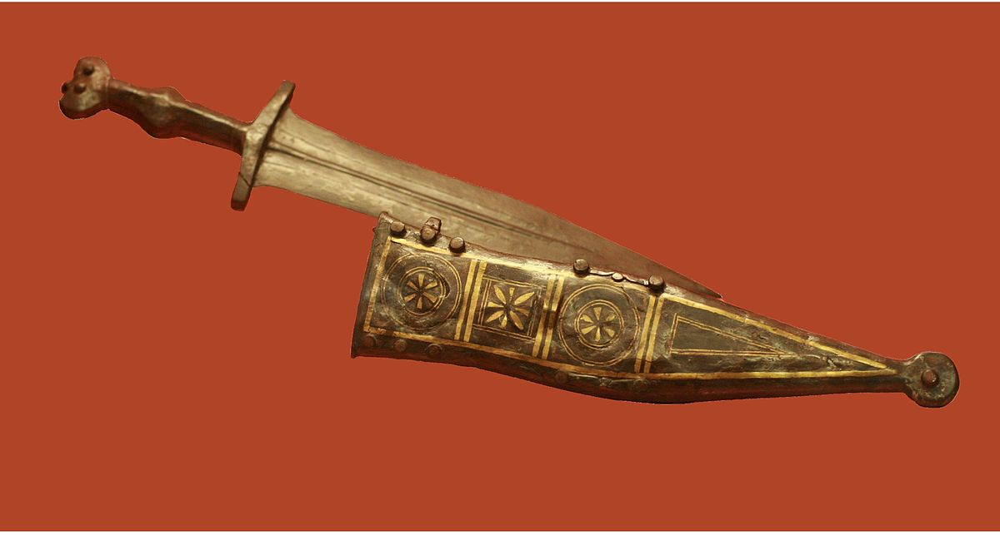

Pomo
Era uma adaga, um punhal ou faca de dois gumes e lâmina larga triangular ou foliforme, cujo nome, tanto em grego como em latim denota a pequenez do artefato e a maneira de segurá-lo na mão. Teria cerca de 15 a 28 centímetros de comprimento e 5 centímetros de largura.
O punho, variadamente ornado ou enriquecido, às vezes feito de madeira dura preta do terebinto sírio, podia ter entre 10 e 13 centímetros de comprimento. Pesava cerca de 450 a 700 gramas em média.
O pomo (então chamado capulus) foi sofrendo alterações desde o século I até ao II. Originalmente era esférico, mas foi sendo substituído por pomos mais bulbosos e trapezoidais. Por volta do século III, quando o púgio conhece um novo surto de popularidade, os pomos ganham um formato de crescente, "língua de carpa" ou "em antenas", como aconteceu aos gládios, durante o mesmo período histórico.
Gladius

O gladius, ou simplesmente gládio, consistia na perfeita arma de infantaria de emprego geral do mundo antigo, provada em batalha desde as florestas da Europa até as arenas de gladiadores de Roma. Muito mais do que um tipo de espada, o gládio era uma arma revolucionária que mudou a configuração do combate durante os grandes dias da República e do Império romanos.
A arma surgiu com o nome de gladius Hispaniensis, ou espada espanhola, durante o século II a.C. Seu nome faz referência à origem espanhola. De um modo geral, o gládio possuía uma lâmina de dois gumes, de comprimento entre 64 e 94 cm, com uma ponta afilada. Os fios da lâmina corriam paralelos, distando de 4 a 5,5 cm. Na extremidade oposta da ponta, havia o punho, acabado com um pomo que servia como contrapeso.
O gládio Pompéia possuía as dimensões da lâmina reduzidas – comprimento 42-55 cm e peso em torno de 1 kg – e era uma arma leve; acredita-se que seu uso foi mais difundido entre os gladiadores nas arenas de Roma antiga. O gládio Pompéia serviu aos romanos até meados do século II, quando foi finalmente substituído pela spatha, mais longa e pesada.
Todos os tipos de gládio eram excelentes armas de combate, particularmente quando utilizados pelos legionários em conjunto com o pilum e o escudo. Nas formações de combate, o gládio era empunhado pelo legionário com a mão direita; o escudo era levado com a esquerda. A formação compacta de legionários permitia o lançamento do pilum e levar vantagem no combate aproximado. Com seu dorso protegido pelo escudo, o legionário podia golpear, cortar ou perfurar o inimigo que se aventurasse diante das legiões.